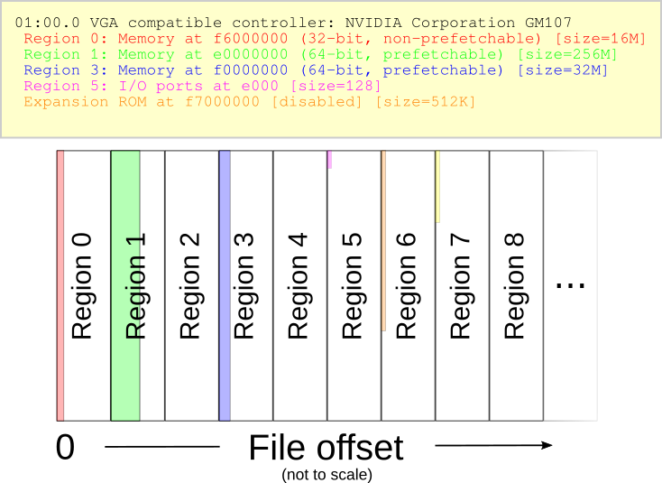
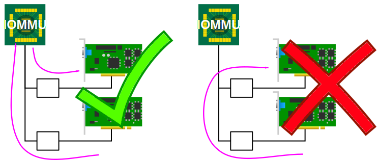
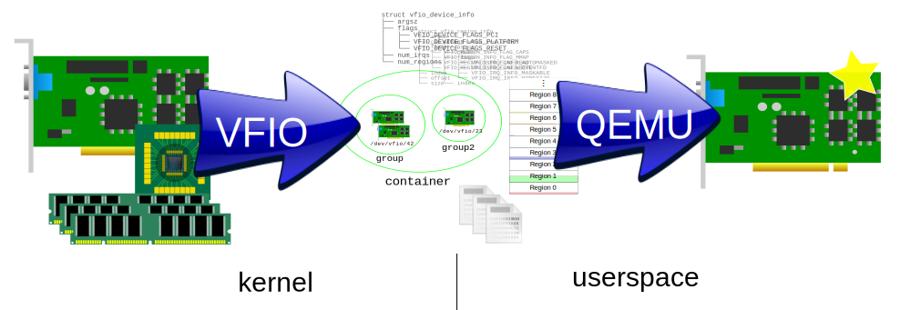

An Introduction to PCI Device Assignment with VFIO
Alex Williamson / alex.williamson@redhat.com
What is VFIO?
Virtual Function I/O
Officially, but it's not limited to SR-IOV, or even PCI
Some suggest...
Very Fast I/O
Sort of, yeah...
I've also heard...
Virtual Fabric I/O
Fabric?
Let me propose...
Versatile Framework for userspace I/O
(OK, not really, but it's more accurate)
VFIO is a secure, userspacedriver framework
- Hardware IOMMU based DMA mapping and isolation
- IOMMU group based
- Modular IOMMU and bus driver support
- PCI and platform devices currently supported
- IOMMU API (type1) and ppc64 (SPAPR) models
- Full device access, DMA, and interrupt support
- Read/write & mmap support of device resources
- Mapping of user memory to I/O virtual addresses
- eventfd and irqfd based signaling mechanisms
Userspace drivers?
Weren't we talking about device assignment...
The requirements are the same
- Access to device resources
- Isolation and secure DMA mapping through an IOMMU
- Interrupt signaling support
Device assignment can be thought of as a multi-layer userspace driver
Also enables other userspace drivers
How does VFIO do this?
VFIO provides acccess to a device within a secure and programmable IOMMU context
Let's start with the device
- How does an operating system program a device?
- How does a device signal the operating system?
- How does a device transfer data?
VFIO takes an abstract view of a device, we want to support anything
How does an operating system program a PCI device?
- Programmed I/O
- IN/OUT
- read/write
- PCI Configuration Space
<queue UNIX "everything is a file" theme song...>
The VFIO device file descriptor
- Divided into regions
- Each region maps to a device resource
- Ex. MMIO BAR, IO BAR, PCI config space
- Region count and info discovered through ioctl
- File offset, allowable access, etc.
A PCI device example
These are all regions
Even PCI config space itself is a region
Regions map to device file offsets
VFIO_DEVICE_GET_INFO
Speaking of interrupts
Q: How does a device signal the operating system?
A: Interrupts
How do we interrupt userspace?
EVENTFD(2) Linux Programmer's Manual EVENTFD(2)
NAME
eventfd - create a file descriptor for event notification
SYNOPSIS
#include <sys/eventfd.h>
int eventfd(unsigned int initval, int flags);
DESCRIPTION
eventfd() creates an "eventfd object" that can be used as an event
wait/notify mechanism by user-space applications, and by the kernel
to notify user-space applications of events...
<queue UNIX "everything is a file" theme song... again>
VFIO_DEVICE_SET_IRQS
One remaining question
How does a device transfer data?
Direct Memory Access - DMA
- I/O device can read & write:
- System memory (RAM)
- Peer device memory
- Outside of CPU MMU control
Need an MMU for I/O
IOMMU Roles
- Translation
- I/O Virtual Address (IOVA) space
- Previously the main purpose of an IOMMU
- Isolation
- Per device translation
- Invalid accesses blocked
Both required for secure user access
IOMMU Issues
- DMA Aliasing
- Not all devices generate unique IDs
- Not all devices generate the ID they should
- DMA Isolation
- Peer-to-peer DMA translation

Solution: IOMMU groups
- Group of devices with DMA isolation from other groups
- Grouping determined by IOMMU driver
- not user configurable
- Influencing factors:
- IOMMU capabilities
- Endpoint device isolation
- Bus and interconnect properties
- Heavily influences VFIO design
Memory Issues
- IOVA page faults are not supported end-to-end
- IOVA to physical mappings are static
- User memory can be relocated
- Swapping, page merging, etc
Solution: Page pinning
A few downsides...
- Pinned memory is locked memory
- User requires sufficient locked memory limits
- Prevents page merging and swapping
- As intended, but we like those features
Let's walk through an example
VFIO in a nutshell
A device decomposed
Recomposing a device
Deconstructed device in userspace...
...turns into assigned device
"Creating fake devices since 2003"
Same questions, different perspective
- How does the guest program a device?
- How does a device signal the guest?
- How does a device transfer data?
Device Programming
How does VM programmed I/O reach a device?
- Trapped by hypervisor (QEMU/KVM)
- MemoryRegion lookup performed
- MemoryRegion.{read,write} accessors called
- read/write to vfio region offsets
MemoryRegion Layering
- "Slow" read/write base layer
- "Fast" mmap overlay
- "Quirks" to correct device virtualization issues
Device Programming
How do VM PCI Config accesses reach a device?
- Not handled as MemoryRegions (yet)
- Selective handling
- Direct pass-through
- read/write to config region
- Emulation & Virtualization
- MSI/X, BARs, ROM, etc.
Interrupt Signaling
- QEMU configures vfio interrupt ioctl for device state
- Interrupts signal via eventfd
- EventNotifiers trigger QEMU device interrupts
- But this is a two step process
- host → QEMU, QEMU → VM
- How to make it faster?
irqfd
- eventfds signal events
- irqfds receive event signals
- eventfds can signal irqfds
- KVM supports VM interrupts through irqfd
- One step process: host → KVM
Accelerating IRQs in hardware
- APIC Virtualization (Intel APICv)
- Exit-less interrupts into VM
- VT-d Posted Interrupts
- Interrupts direct to vCPU
Last question
How does a device transfer data?
Enabling DMA for the VM
Two options
- Emulated/para-virtulized IOMMU
- IOMMU on x86 is optional
- Cannot require guest use it for DMA
- Overhead for dynamic mappings
- Not actually an option
- Transparent VM mapping
- Map entire VM physical address space
- Guest OS unaware of IOMMU, DMA is physical
PCI Device assignment with VFIO
The Complete Picture
What's new for 2016?
Intel Graphics Device (IGD) Assignment
- Sandy Bridge+: "Legacy" mode
- Broadwell+: Universal Passthrough (UPT) mode
- Host: Linux v4.6+, QEMU 2.7+
- See http://vfio.blogspot.com for details
No new Code 43 problems!
- Workaround for NVIDIA Hyper-V detection "bug"
-cpu ...,hv_vendor_id=KeenlyKVM
<hyperv>
<vendor_id state='on' value='KeenlyKVM'/>
</hyperv>
QEMU 2.5+, libvirt v1.3.3+
"Mediated Device" Development
- Talk: "vGPU on KVM - A VFIO Based Framework"by Neo Jia & Kirti Wankhede from NVIDIAThursday 10am
- Collaboration with Intel, IBM, and Red Hat
- Expose kernel-level virtual devices to userspace through VFIO API
Alex Williamson / alex.williamson@redhat.com